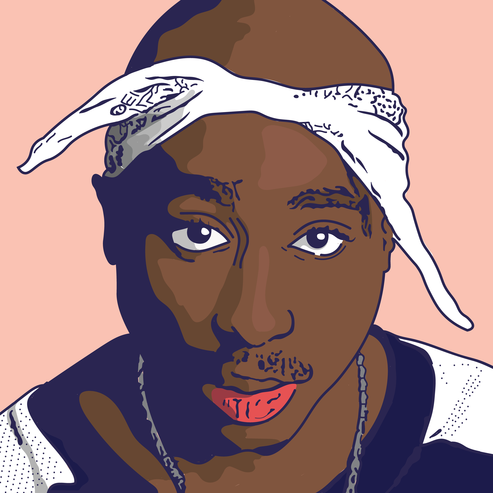
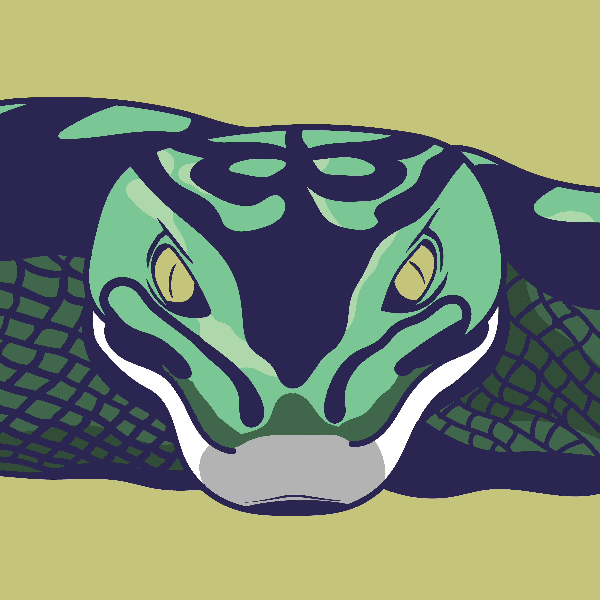
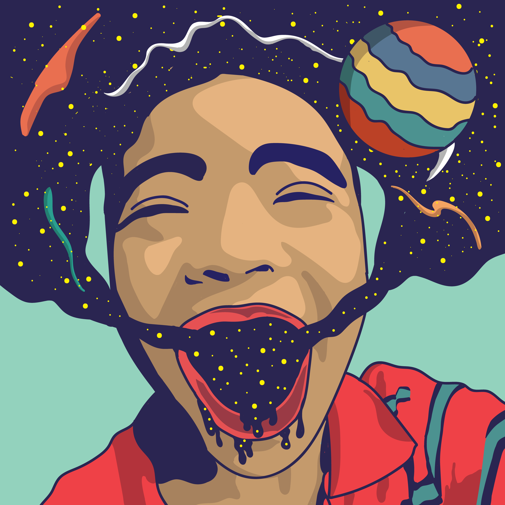
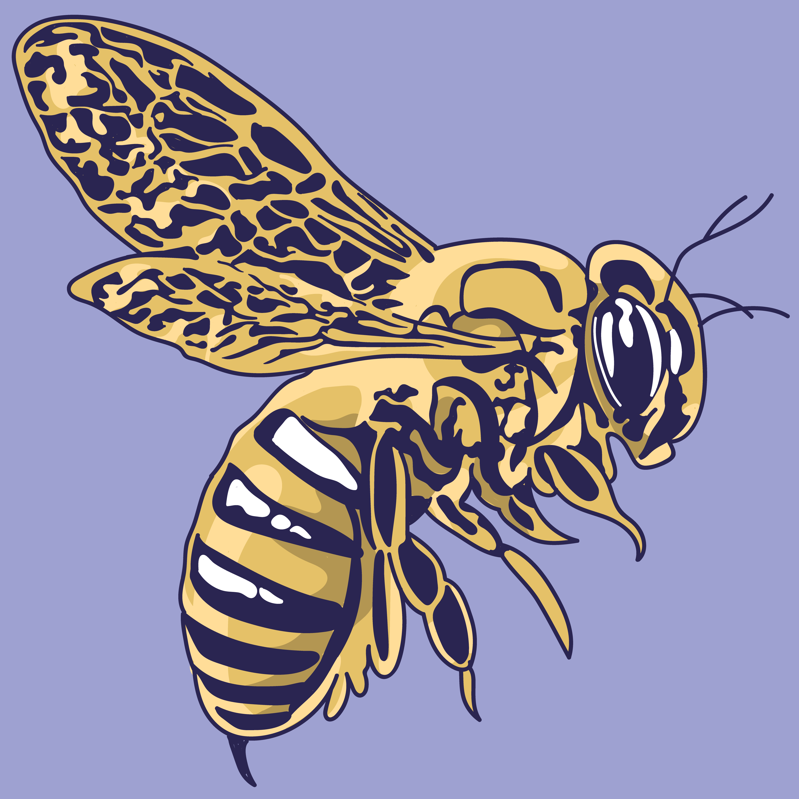
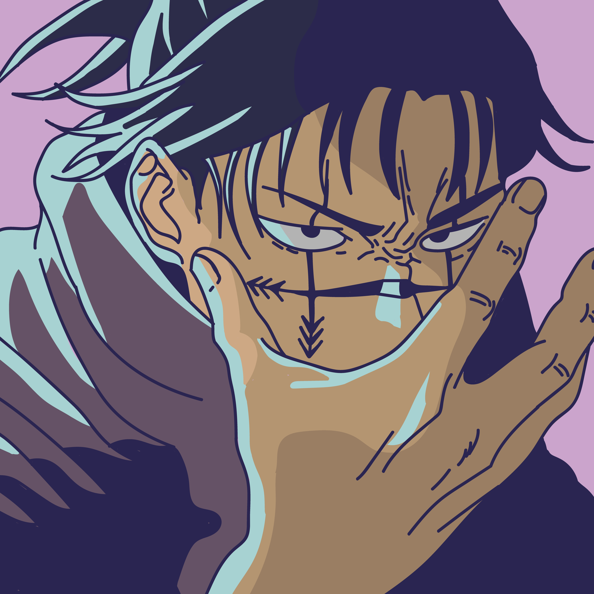
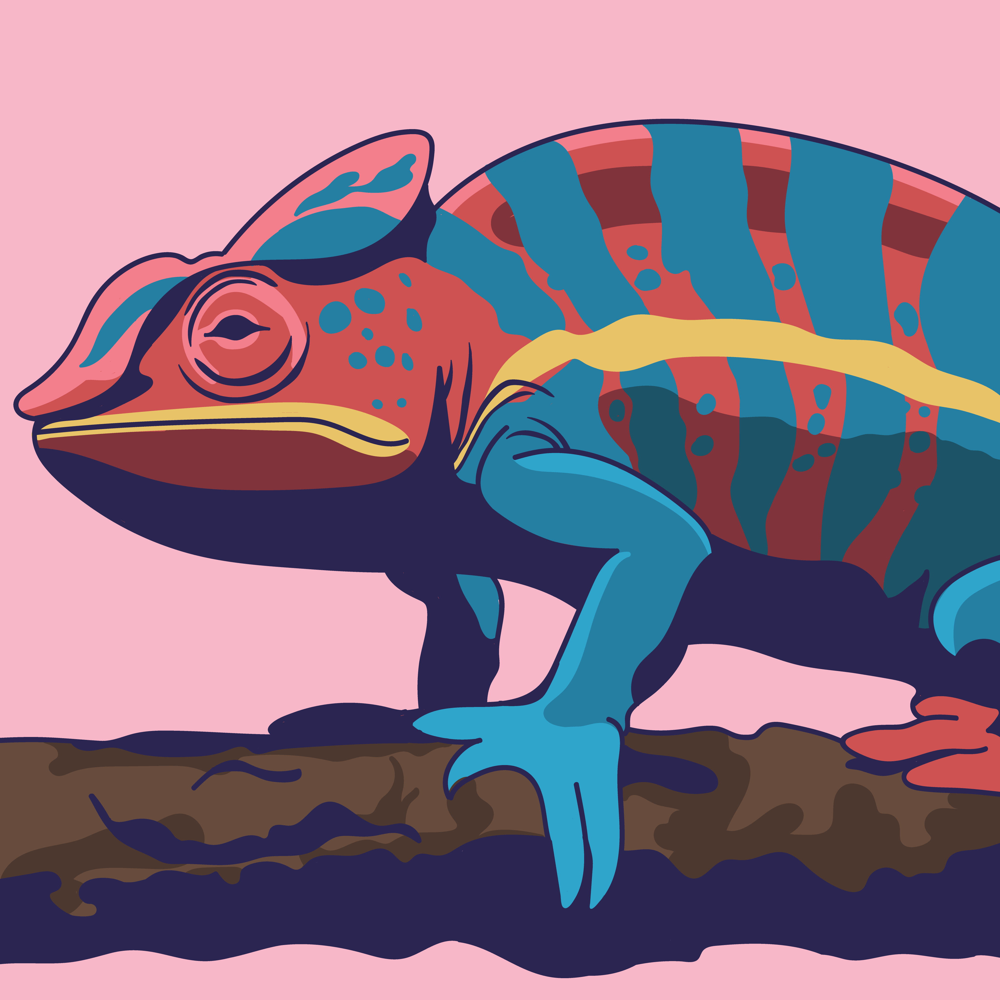
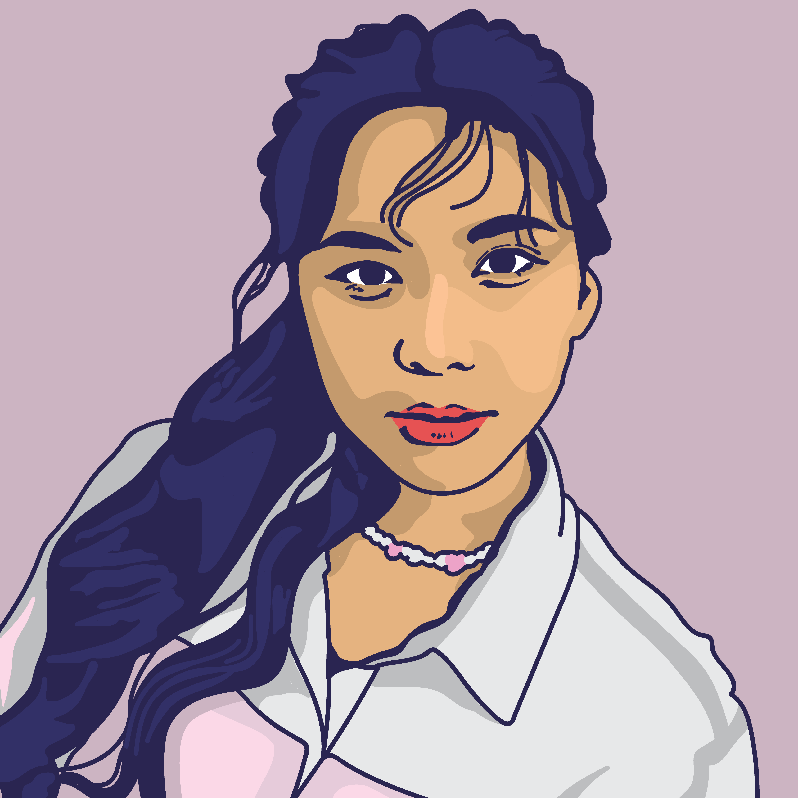
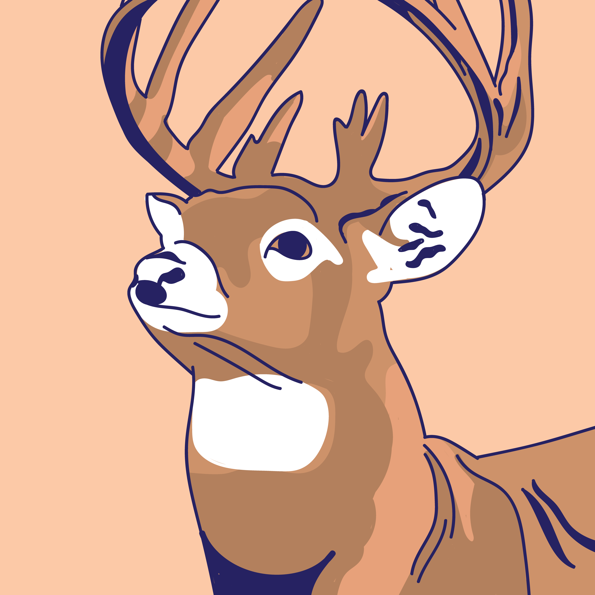
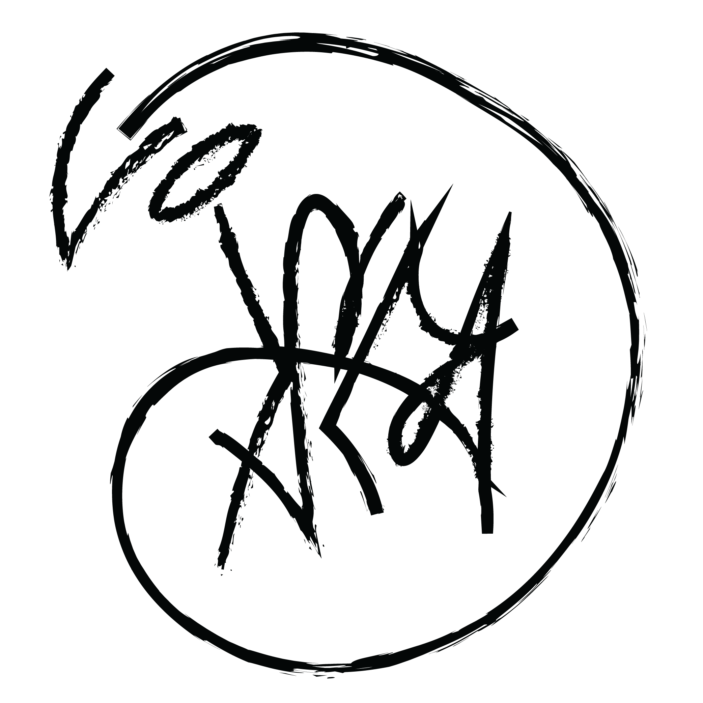
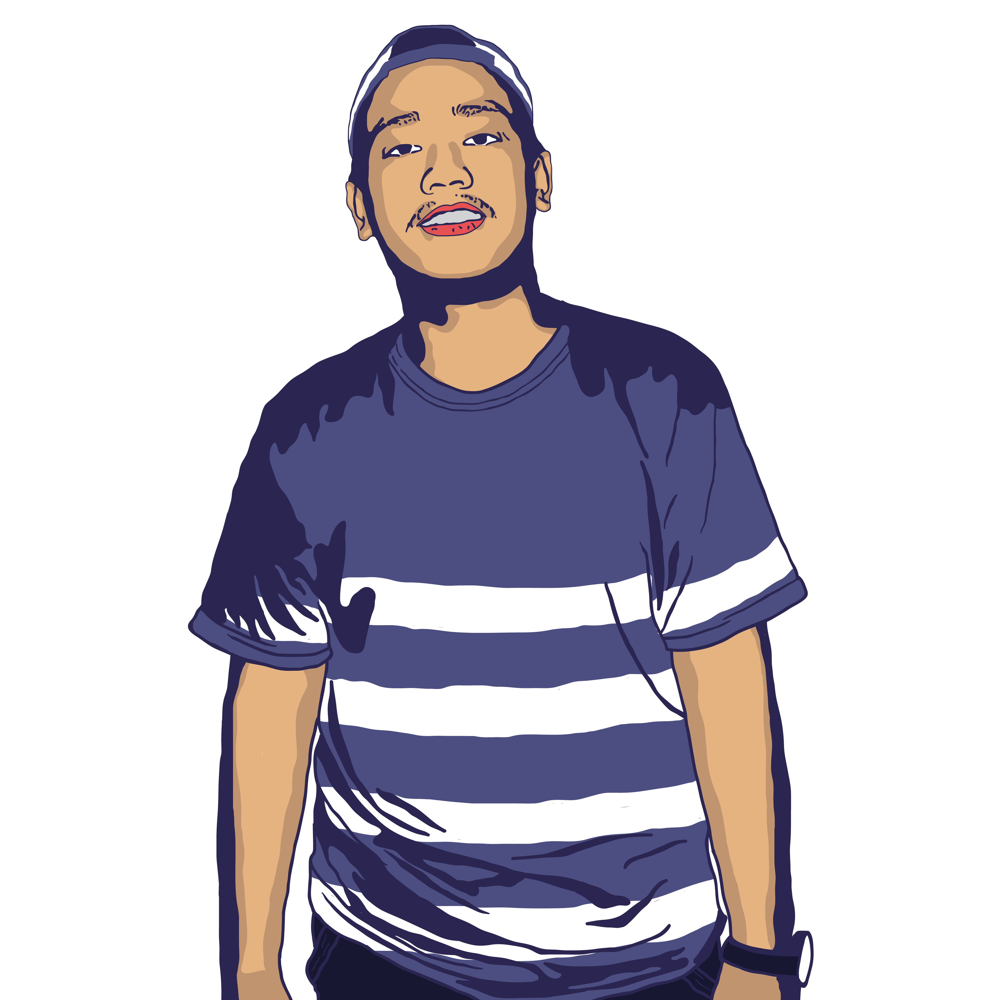

Based in Tangerang Selatan, Indonesia
israfr20@gmail.com
Hi... here are some personal projects I've created, where I transformed photos into illustrations using Adobe Illustrator. They might not be perfect, but I will keep learning.
As for this... this is a UI elements I created using HTML and CSS. Take a look and give it a try.
This canvas is under construction
This canvas is under construction
Me talking about myself, my hobbies, and my background.

Hello, my name is Isra Fastlah Ramadhan. I was born in Jakarta, Indonesia, on January 20, 1998. I graduated from Budi Luhur University, Faculty of Information Technology, in 2022. This website serves as an experimental project for me to continue honing my programming skills; I typically work with PHP, for this site, I have used only HTML and CSS. I am constantly seeking new ways to improve my abilities and learn about the latest technologies. In my free time, I enjoy playing video games such as DOTA 2 and Counter Strike 2. Sometimes, I also transform the photos and images I have created into illustrations using Adobe Illustrator. I am always open to new opportunities to learn and grow both in illustration and a developer and I am very excited about what the future holds for my career in this field.